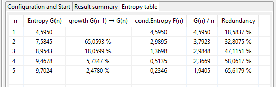

The Entropy Analysis plug-in calculates the measure of entropy referring to Claude Elwood Shannon [1]. In the JCrypTool implementation, the entropy is calculated on the alphabet of observed characters in the text.
The entropy of a document is an index of its information content. The entropy is measured in bits per character. Texts in a natural language have an entropy of around \(4.0\) (depending on the alphabet size). Completely random texts have a value of \(8.0\). The output of modern encryption methods is usually above \(7.9\).
From the information theory point of view, the data in the current window can be viewed as a message source. To calculate the information content one examines the probability distribution of this source. It is assumed here that the individual messages (characters in the document / file) are stochastically independent of each other and are transmitted by the source with a uniform probability. The information content of a message \(M_i\) is defined by
information content \(M_i := \log_{2} (\frac{1}{p_i}) = -\log_2 (p_i)\)
where \(p_i\) is the probability that message \(M_i\) is transmitted by the message source and \(\log_{2}\) denotes logarithms to base \(2\) (as indeed it does elsewhere in this document). This means that the information content depends exclusively on the probability distribution with which the source generates the messages. The semantic content of the message does not enter into the calculation. As the information content of an unusual message is higher than that of a common message, the inverse value of the probability is used in the definition. Moreover, the information content of two messages chosen independently of one another is equal to the sum of the information contents of the individual messages.
With the aid of the information content of the individual messages, the average amount of information which a source with a specified distribution delivers can be calculated. To calculate this mean, the individual messages are weighted with the probabilities of their occurrence.
\(\text{Entropy}(p_1, p_2, ..., p_r):= - [\, p_1 \cdot \log_{2}(p_1) + p_2 \cdot \log_{2}(p_2) + ... + p_r \cdot \log_{2}(p_r)]\)
The entropy of a source thus indicates its characteristic distribution. It measures the average amount of information which one can obtain through observation of the source or, conversely, the indeterminacy which prevails over the generated messages when one cannot observe the source.
Entropy is an expression of insecurity as the number of Yes/No questions which have to be answered in order to clarify a message or a character. If a character has a very high probability of occurrence, then its information content is low. This would be the case, for example, with a business partner who regularly replies "Yes". This reply also does not permit any conclusions to be drawn as to understanding or attention. Replies which occur very seldom have a high information content.
For documents which contain only upper case letters, the entropy lies between \(0 \ \frac{\text{bit}}{\text{char}}\) (in a document which consists of only one character) and \(\log_{2} (26) \frac{\text{bit}}{\text{char}} = 4{,}700440 \frac{\text{bit}}{\text{char}}\) (in a document in which all \(26\) characters occur equally often). For documents which can contain every character of the character set (\(0\) to \(255\)) the entropy lies between \(0 \ \frac{\text{bit}}{\text{char}}\) (in a document which consists of only one character) and \(\log_{2} (256) \frac{\text{bit}}{\text{char}} = 8 \frac{\text{bit}}{\text{char}}\) (in a document in which all \(256\) characters occur equally often).
The analysis uses the text editor as message source. After opening a text in the editor, you can start the calculation in the "Configuration and Start" tab. The results are shown in the tabs "Result summary" and "entropy table".
To get the calculation running do the following three steps:
This tab shows a summary of the finished analysis. The following screenshot shows an example followed by an explanation of the values:
This tabular shows all the calculated values regarding statistical dependencies from single letters up to \(n\)-tuple.
\(G(n)\) is the entropy regarding \(n\)-tuples.
\(F(n)\) is the conditional entropy of the \(n^\text{th}\) letter considering the preceding \((n-1)\) letters.